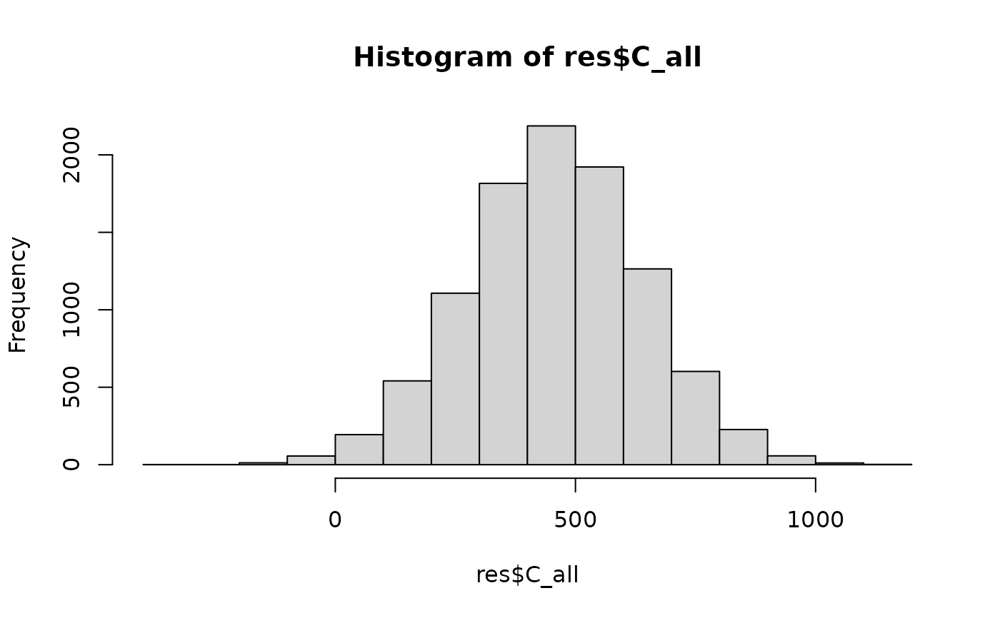

Generate Monte Carlo Simulations and calculate carbon stock for all pools
Source:R/fct_combine_mcs_C.R
fct_combine_mcs_C.RdTBD
Value
A data frame with N simulations of each carbon pool and associated factors and the resulting total carbon stock in tCO2/ha.
Examples
library(dplyr)
library(readxl)
library(mocaredd)
usr <- read_xlsx(
path = system.file("extdata/example1.xlsx", package = "mocaredd"),
sheet = "user_inputs",
na = "NA"
)
cs <- read_xlsx(
system.file("extdata/example1.xlsx", package = "mocaredd"),
sheet = "c_stock",
na = "NA"
)
cs_clean <- cs |> filter(!(is.na(c_value) & is.na(c_pdf_a)))
c_sub <- cs_clean |> filter(lu_id == "ev_wet_closed")
res <- fct_combine_mcs_C(.c_sub = c_sub, .usr = usr)
hist(res$C_all)

round(median(res$C_all))
#> [1] 453